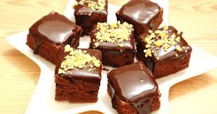

Un brownie es un bizcocho de chocolate pequeño, típico de la gastronomía de Estados Unidos. Se llama así por su
color marrón oscuro, o brown en inglés. A veces se cubre con jarabe espeso de chocolate y puede llevar dentro
trocitos de nueces, chocolate butterscotch (una especie de toffee crujiente) o mantequilla de maní. Se cree que
la primera mención a un brownie es en 1896, aunque esta receta no contenía chocolate, sino una melaza. Se creó
cuando un importante repostero estadounidense se olvidó de echar levadura a su pastel de chocolate. Así nació
este compacto bizcocho.

ingredientes
4 huevos
1 taza de azucar blanca
1 taza de azucar morena
220grms mantequilla
70grms chocolate
1 cucharadita de vainilla
2 tazas de harina de trigo
1/4cdita polvo para hornear
1/4cdita sal
1 1/2 taza de plovo
Pasos
batir los huevos con el azucar solo hasta que este mezcladoderretir mantequilla junto con el chocolate y agregar junto con la vainillaagregar harinna,el polvo par hornear y la sal a la mezcla y revolver solo hasta que este homogeneo agregar el milo y revolver con una espatulaverter sobre el molde y alisar la masa con
>una espatula para que quede bien distribuidahornear por 35-40 minutos maximo